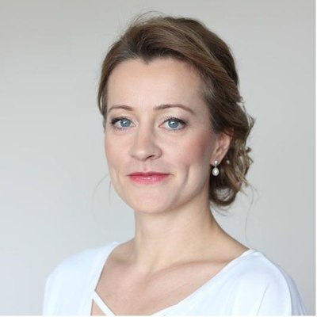
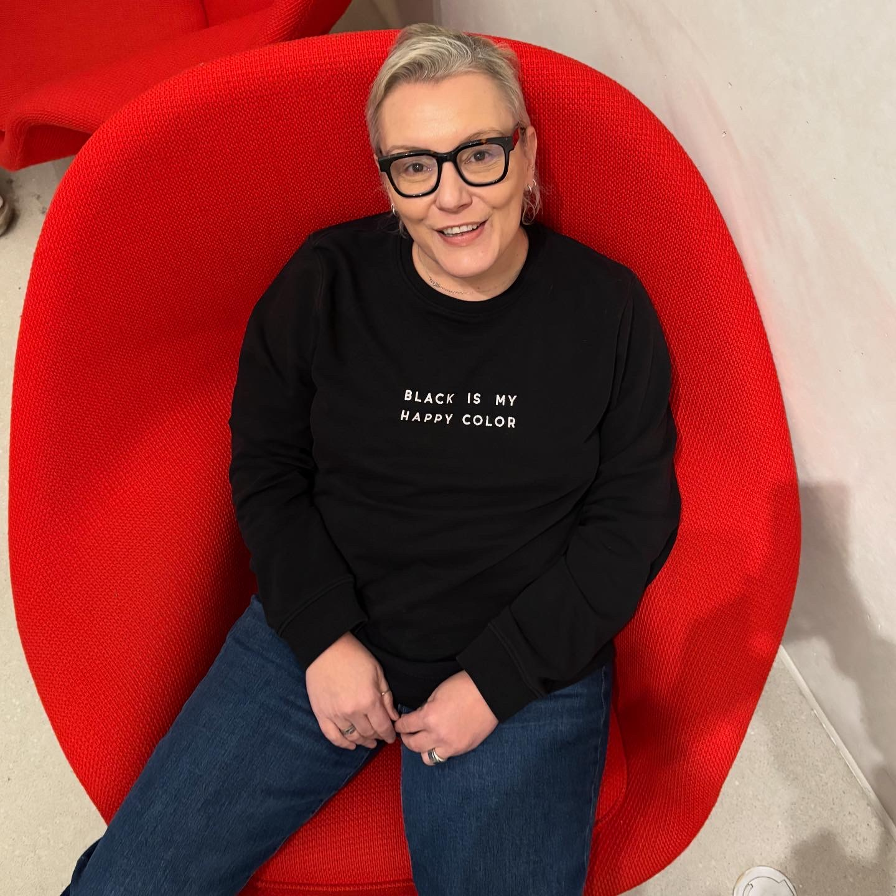

Kadra, która łączy naukę z praktyką
Ponad 40 ekspertów (superwizorów PTTPB, profesorów i certyfikowanych psychoterapeutów) tworzy zespół, który uczy psychoterapii z sercem.
Ludzie, od których wszystko się zaczęło
Łączy nas wspólna pasja do nauki, dydaktyki i rozwoju terapii poznawczo-behawioralnej.
Adam Elżanowski
Kierownik Szkolenia
Psycholog, certyfikowany psychoterapeuta CBT (PTTPB nr 500, EABCT nr 61) i certyfikowany Superwizor-Dydaktyk PTTPB nr 78. Twórca podcastu „W Głowie się Mieści" i platformy AkademiaCBT. Specjalista terapii traumy.
Poznaj bliżej
Magdalena Skuza
Kierownik Szkolenia
Psycholożka, certyfikowana psychoterapeutka CBT (PTTPB), certyfikowany Superwizor-Dydaktyk PTTPB nr 87, specjalistka DBT, EMDR i ACT (PTTPB nr 552). Współzałożycielka i wieloletnia przewodnicząca Polskiego Towarzystwa Terapii DBT.
Poznaj bliżejKarolina Rakocz
Dyrektorka Szkoły
Certyfikowana Psychoterapeutka Poznawczo-Behawioralna (PTTPB). Specjalistka terapii uzależnień, Certyfikowana Terapeutka Dialogu Motywującego.
Poznaj bliżej
Marzena Badyna
Kierownik Programowy Szkolenia w psychoterapii CBT osób dorosłych
Certyfikowany Superwizor-Dydaktyk PTTPB nr 50. Psychoterapeutka poznawczo-behawioralna. Odpowiedzialna za jakość i spójność programu szkoleniowego.
Poznaj bliżejEwa Wojtyna
Kierownik Programowy Szkolenia w psychoterapii CBT z poszerzonym modułem pracy z pacjentem w wieku rozwojowym
Doktor nauk humanistycznych, specjalista psychiatrii, superwizor i certyfikowana psychoterapeutka CBT. Superwizor-Dydaktyk Terapii Poznawczo-Behawioralnej.
Poznaj bliżej
Agata Engel
Opiekun ds. rozwoju osobistego
Certyfikowana Psychoterapeutka CBT (PTTPB), psycholożka i dydaktyczka. Specjalizuje się w terapii opartej na uważności oraz pracy z traumą.
Poznaj bliżejSuperwizorzy-Dydaktycy PTTPB
Doświadczeni klinicyści i dydaktycy, którzy prowadzą superwizje i kształcą następne pokolenia terapeutów.
Profesorowie i naukowcy
Badacze i wykładowcy akademiccy wnoszący do naszego programu najnowsze osiągnięcia nauki.
Certyfikowani psychoterapeuci i wykładowcy
Aktywni klinicyści, którzy na co dzień łączą praktykę terapeutyczną z nauczaniem.
Chcesz się uczyć od najlepszych?
Rozpocznij 4-letnie szkolenie psychoterapii CBT pod okiem naszych ekspertów.